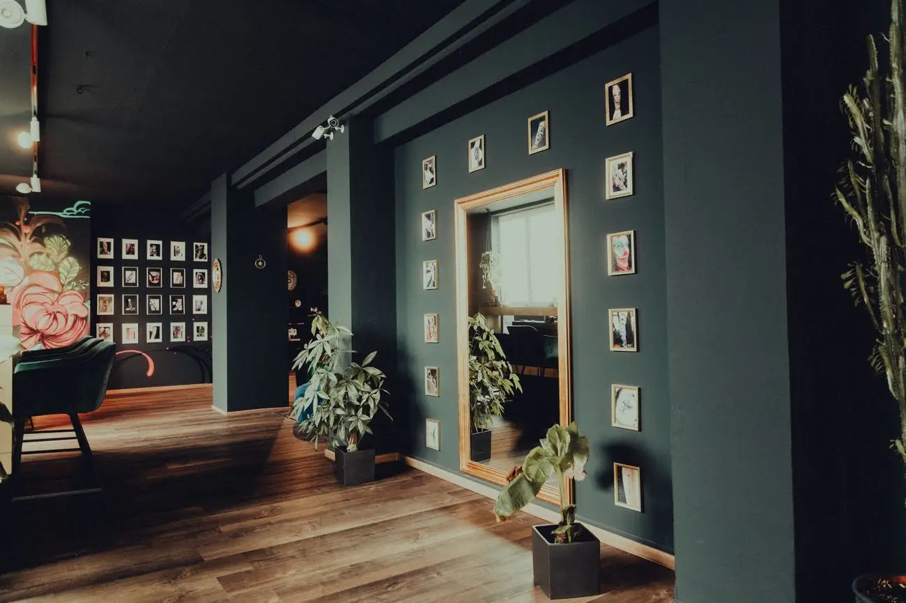
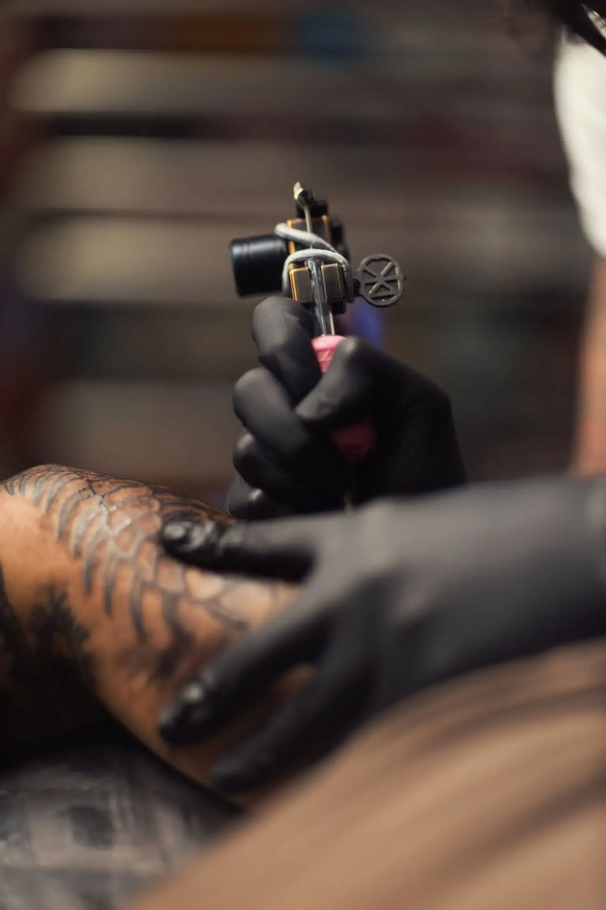
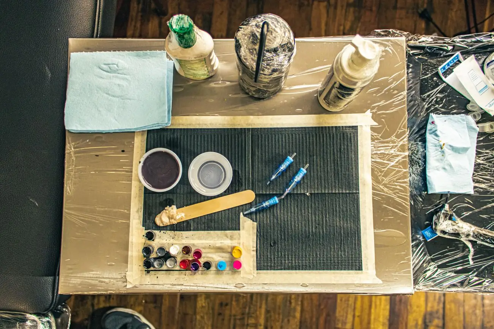

01 / The shop
What clients
mention
- Fine line florals
- Portraits
- Full sleeves
- Neck & forearm pieces
- First tattoos
Artists named in Google reviews: Anatole, Ariel and Alex (Deuce).
Styles and artists are taken from Google review text. Browse the shop’s Instagram for the artists’ work.
02 / Gallery
Inside a
tattoo studio



Representative stock photos, not Don Vano and not their work.
03 / Reviews
Word from
the chair
5.0
104 Google reviews
104 Google reviews
- № 01★★★★★
“Super clean shop, great vibes, and amazing work. my artist is ariel she’s always super professional and always makes sure I’m comfortable. definitely recommend if your looking to get your first tattoo or even your 6th !”
Google review, January 2026 - № 02★★★★★
“Anatole is the best. The details and precision of his work is unparalleled. The shop itself is an absolute vibe as well - if I could give this place and Anatole 10 stars I would. He’s done a full sleeve for me, a neck piece, and now my forearm.”
Google review, January 2026 - № 03★★★★★
“I have gotten work done from both Alex and Ariel and their work speaks for itself. The shop itself is very clean and brings an at home feeling. Everyone was so welcoming and I am happy with trusting them and getting great work done. I will definitely book again!”
Google review, February 2026 - № 04★★★★★
“I went to Ariel for some fine line flowers and had such an amazing experience. The shop is super welcoming and feels like family — I felt at home and relaxed the whole time. She really took her time and designed everything with me, making sure it was exactly what I wanted. I honestly couldn’t be happier — it turned out even better than I imagined. I’ll definitely be coming back for more.”
Google review, February 2026 - № 05★★★★★
“Anatole has done multiple tattoos on me so far with many more to go and I couldn’t be happier with the outcome of each one. He truly is one of the most talented artists I’ve come across. The entire Don Vano team have such a welcoming and comforting spirit, you immediately feel like part of the family. Couldn’t recommend a better place to go for your tattoos.”
Google review, January 2026
04 / Visit
Find the
shop
Hours
Daily 1 – 9 PM
Per the Google listing.
Walk-ins
Welcome, per their Instagram.
Ready for
your next piece?
Call the shop or message them on Instagram.